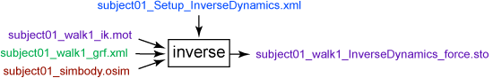

The Inverse Dynamics (ID) Tool determines the generalized forces (e.g., net forces and torques) at each joint responsible for a given movement. Given the kinematics (e.g., states or motion) describing the movement of a model and perhaps a portion of the kinetics (e.g., external loads) applied to the model, the ID Tool uses these data to perform an inverse dynamic analysis. Classical mechanics mathematically expresses the mass-dependent relationship between force and acceleration, F = ma, with equations of motion. The Inverse Dynamics Tool solves these equations, in the inverse dynamics sense, to yield the net forces and torques at each joint which produce the movement.
To launch the ID Tool, select Tools → Inverse Dynamics from the OpenSim main menu bar.
Overview
This figure shows the required inputs and outputs for the Inverse Dynamics Tool.

Inputs and Outputs of the Inverse Dynamics Tool. Experimental data are shown in green; OpenSim files (.osim) are shown in red; settings files are shown in blue; files generated by the workflow are shown in purple.
The file names are examples that can be found in the examples/Gait2354_Simbody directory installed with the OpenSim distribution. |
Settings File
The subject01_Setup_InverseDynamics.xml file is the setup file for the Inverse Dynamics Tool. It contains settings, as described in detail in How to Use the Inverse Dynamics Tool.
Inputs
Three data files are required as input by the Inverse Dynamics Tool:
subject01_walk1_ik.mot: Motion file containing the time histories of generalized coordinates that describe the movement of the model. This file could be generated by the Inverse Kinematics Tool, or manually. The file does not need to contain values for all coordinates. The coordinates that were not specified are assumed to have default values.
subject01_walk1_grf.xml: External load data (i.e., ground reaction forces, moments, and center of pressure location). Note that it is necessary to measure and apply or model all external forces acting on a subject during the motion to calculate accurate joint torques and forces. This file includes the name of the ground reaction force data file (e.g., subject01_grf.mot) as well as the names of the bodies to which they are applied. Options to specify the forces, points of application, and torques in a global or local body frame (relative to the body to which the force is being applied) are also defined here. Details are provided in How to Use the Inverse Dynamics Tool.
subject01_simbody.osim: A subject-specific OpenSim model generated by scaling a generic model with the Scale Tool or by other means, along with an associated marker set containing adjusted virtual markers. The model must include inertial parameters. Note that forces such as contact, ligaments, bushings, and even muscles will be applied to the model based on the kinematic state of the model and defaults for the muscle states, unless these forces are specifically excluded in the calculation.
Outputs
The Inverse Dynamics Tool generates a single file in a folder specified in the setup file:
subject01_walk1_InverseDynamics_force.sto: Storage file containing the time histories of the net joint torques and forces acting along the coordinate axes that produce the accelerations estimated (via double differentiation) from your measured experimental motion and the external forces applied.
Best Practices and Troubleshooting
- Filter your raw coordinate data, since noise is amplified by differentiation. Without filtering, the calculated forces and torques will be very noisy.
- Compare your results to data reported in the literature. Your results should be within one standard deviation of reported values.
- Inspect results from Inverse Dynamics to check whether ground reaction forces were applied correctly or not. Are there large and unexpected forces at the pelvis? For gait, applying ground reaction forces should help reduce the forces computed by Inverse Dynamics at the pelvis.
- See How Inverse Dynamics Works and How to Use the Inverse Dynamics Tool for more information about using the Inverse Dynamics Tool.
Next: How Inverse Dynamics Works
Home: Inverse Dynamics
{kind=link}